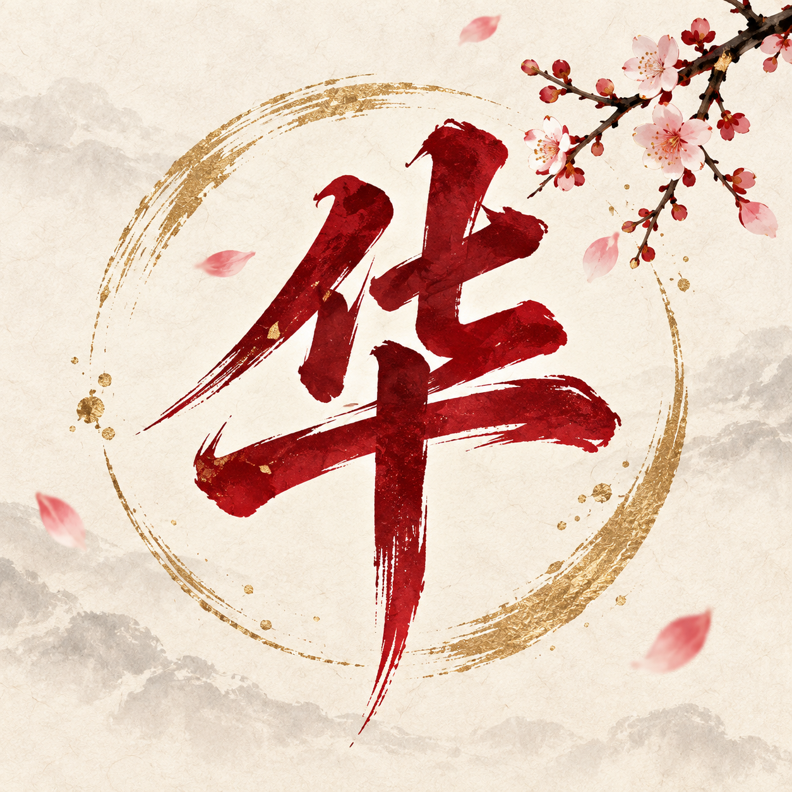

在场景里亲历
九段探索穿插在视觉小说主线中。走近人物和物件，观察、整理、动手，再带着所得回到故事。

卷一 · 第 1—13 章
走进故事，也为自己的判断留下来处。
九段探索穿插在视觉小说主线中。走近人物和物件，观察、整理、动手，再带着所得回到故事。
酒楼六个人物拥有各自的说法。询问意愿，携证追问，区分当事人陈述、有限目击与人物推断。
导出华浅的探索手记，从相关话题入口继续阅读与讨论。提问和判断，也成为玩家的故事。
快速体验：游戏首页「入局一览 → 酒楼风波」。完整阅读从「初入书中」开始；手机建议横屏。AI 暂时无法响应时，可切换预设问答继续探索。
当前版本支持知乎话题搜索跳转和手记导出；知乎账号授权与内容发布尚未接入。
原作：七月荔《洗铅华》。片头节选与既有人物、场景来自项目组交接素材；后续画面为本次网页版实机录制。介绍视频旁白由 ChatCut 官方音色生成。
介绍视频配乐：PeriTune《Shenxian》，依据 CC BY 4.0 使用，剪辑并调整音量。作者及使用说明 · 游戏音乐与素材署名